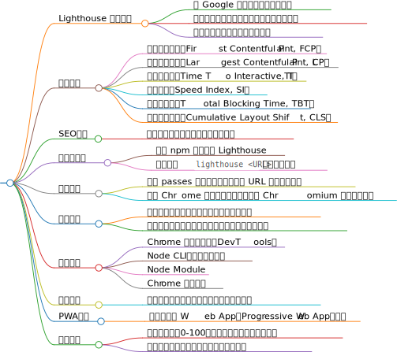

Lighthouse是一款由Google开发的开源工具，它通过一系列的自动化测试来评估网页的性能、可访问性、最佳实践和PWA（Progressive Web App）支持程度。这些测试包括但不限于页面加载速度、交互性能、可访问性标准是否符合WCAG等建议，还包括网页的安全性、图片优化等方面。Lighthouse会模拟真实用户访问网页，并在评估完成后生成一份详细的报告，其中包含了各种性能指标、建议和优化建议.
Lighthouse的性能评估涵盖多个方面，主要包括以下几个核心指标：
首次内容绘制（First Contentful Paint, FCP）：测量浏览器首次将任何内容（如文字、图像、canvas等）绘制到屏幕上的时间点。
最大内容绘制（Largest Contentful Paint, LCP）：加载页面中元素到屏幕上的最长时间点。
可交互时间（Time to Interactive, TTI）：所有的页面内容都已成功加载，且能够快速地对用户的操作做出反应的时间点。
速度指数（Speed Index, SI）：衡量了首屏可见内容绘制在屏幕上的速度。
总阻塞时间（Total Blocking Time, TBT）：网页被阻塞与用户交互的时间。
累积布局偏移（Cumulative Layout Shift, CLS）：页面的布局在加载时的偏移程度.
Lighthouse可以通过多种方式使用，包括：
Chrome DevTools：在Chrome浏览器的开发者工具中集成了Lighthouse，可以直接在浏览器中进行性能测试。
命令行工具：可以通过Node CLI工具运行Lighthouse，这允许开发者将Lighthouse集成到持续集成系统中。
Web界面：一些在线服务提供了基于Lighthouse的网页性能测试功能，用户可以直接在网页上输入URL进行测试.
Lighthouse生成的报告包含了详细的性能数据和优化建议，开发者可以根据报告中的信息找出网站的性能瓶颈，并采取相应的优化措施。报告中的得分范围从0到100，分为三个等级：0-49（慢）、50-89（平均）、90-100（快）。高分表示网站在相应的评估方面表现良好，低分则提示需要进一步优化.
综上所述，Lighthouse是一款功能强大的网页性能分析工具，它通过一系列的测试来评估网页的多个方面，并提供详细的报告和优化建议，帮助开发者提升网站的性能和用户体验。
Lighthouse是Google开发的一个开源自动化工具，主要用于改善网络应用的质量。它可以在多种平台上使用，包括但不限于以下几种：
Chrome浏览器：Lighthouse最初作为Chrome浏览器的扩展程序推出，用户可以直接在Chrome的开发者工具中找到Audits面板，通过该面板运行Lighthouse的测试。
命令行工具：Lighthouse也可以作为命令行工具使用，这使得它能够更容易地集成到持续集成系统中。用户可以通过安装Node.js的包管理器npm或yarn来全局安装Lighthouse，然后在命令行中运行Lighthouse命令来测试网站。
移动端设备：虽然Lighthouse主要用于桌面浏览器的测试，但它也支持移动端的测试。用户可以通过特定的命令行参数来指定测试的移动设备类型和操作系统。
其他浏览器：尽管Lighthouse最初是为Chrome设计的，但它的核心功能也可以在其他基于Chromium的浏览器中使用，例如Microsoft Edge和Opera。
自定义平台：Lighthouse的API允许开发者将其集成到自己的应用程序中，从而在自定义的平台上使用Lighthouse的功能。
综上所述，Lighthouse可以在多种平台上使用，无论是直接在Chrome浏览器中还是通过命令行工具，甚至是集成到其他应用程序中。这使得Lighthouse成为了一个灵活且强大的工具，可以帮助开发者在不同的环境中测试和优化他们的网站。
Lighthouse的性能评估报告主要包含以下几个核心指标：
First Contentful Paint (FCP)：页面第一个元素绘制时间点，即页面首次渲染出文本或图片的时间。
Largest Contentful Paint (LCP)：最大内容绘制，标识网页渲染出最大文本或图片的时间，与首次有效绘制（First Meaningful Paint, FMP）相似，但LCP是一个通用固定计算规则。
Time to Interactive (TTI)：可交互时间，即页面达到可交互状态所需的时间。
Cumulative Layout Shift (CLS)：累计布局偏移，衡量页面上内容意外偏移的程度。
Total Blocking Time (TBT)：累计阻塞时间，标识网页首次内容渲染和可交互时间之间的所有超时任务的超时累计时间。
Speed Index：一种衡量页面可视区域加载速度的指标，它衡量的是内容在页面加载过程中的视觉显示速度。
这些指标共同构成了Lighthouse性能评估报告的核心，它们能够全面反映网站的加载性能和用户体验。通过优化这些指标，可以显著提高网站的性能和用户满意度。
Lighthouse是Google推出的一个开源自动化工具，用于改善网页的质量。它通过运行一系列测试，并生成一个报告，显示网站在性能、可访问性、最佳实践和SEO等方面的得分。
Lighthouse的性能评分是通过对多个性能指标的加权平均计算得出的。这些指标包括但不限于：
最大内容绘制（Largest Contentful Paint, LCP）：衡量用户何时感知到页面的最大内容可见。
首次内容绘制（First Contentful Paint, FCP）：页面第一次渲染内容的时间。
首次可交互时间（First Input Delay, FID）：页面首次变得可交互的时间。
累积布局偏移（Cumulative Layout Shift, CLS）：页面布局稳定性的度量。
每个指标都会根据其在真实网站性能数据的分布上的位置，被转换为0到100之间的分数。例如，LCP的指标值表示用户启动页面加载和页面呈现其主要内容之间的持续时间。根据HTTPArchive数据，表现最好的网站在大约1,220毫秒内渲染LCP，因此指标值映射为99分。HTTPArchive数据的第25个百分位数变为50分（中值控制点），第8个百分位数变为90分（良好/绿色控制点）。
Lighthouse报告中的分数分级通常反映了网站相对于其他网站的性能水平。例如，一个得分为90的网站意味着它在性能方面优于约80%的网站。分数越高，网站的性能越好，用户体验也越佳。
Lighthouse团队会定期进行调研，根据用户的反馈来找出对用户感知的性能影响最大的因素，从而修改指标和权重。这意味着随着时间的推移，哪些指标更重要可能会发生变化，因此网站所有者需要不断关注Lighthouse的更新，以确保他们的网站保持高性能。
综上所述，Lighthouse报告中的分数分级是通过对多个性能指标的加权平均计算得出的，这些指标反映了网站相对于其他网站的性能水平。分数的高低直接关系到网站的用户体验，因此网站所有者应当重视Lighthouse报告，并根据其提供的建议进行优化。
Lighthouse 工具概述
由 Google 开发的开源自动化工具
用于评估网页性能、可访问性、最佳实践等
提供详细的性能指标和优化建议
性能指标
首次内容绘制（First Contentful Paint, FCP）
最大内容绘制（Largest Contentful Paint, LCP）
可交互时间（Time To Interactive, TTI）
速度指标（Speed Index, SI）
阻塞总时间（Total Blocking Time, TBT）
累积布局偏移（Cumulative Layout Shift, CLS）
SEO优化
评估网页是否符合搜索引擎优化标准
安装与运行
通过 npm 全局安装 Lighthouse
运行命令 lighthouse <URL> 进行性能测试
高级用法
配置 passes 属性控制加载请求的 URL 和收集的信息
使用 Chrome 协议检测、调试、分析 Chromium 内核的浏览器
注意事项
清理浏览器缓存以获得准确的性能分析分数
在无插件、无缓存环境下运行以保护用户数据安全
使用方式
Chrome 开发者工具（DevTools）
Node CLI（命令行工具）
Node Module
Chrome 扩展程序
可访问性
确保网页内容对所有人友好，包括残障人士
PWA支持
验证渐进式 Web App（Progressive Web App）性能
报告解读
报告得分范围0100，分为慢、平均、快三个等级
提供优化建议和改进页面性能的参考方案
